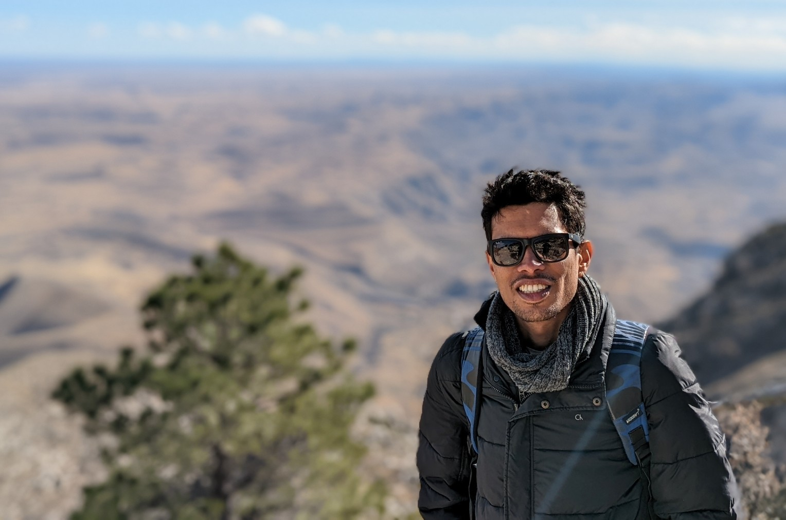
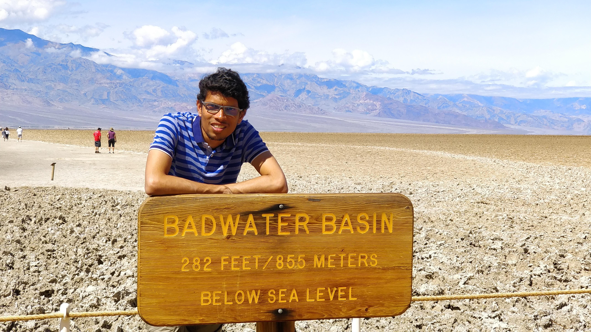
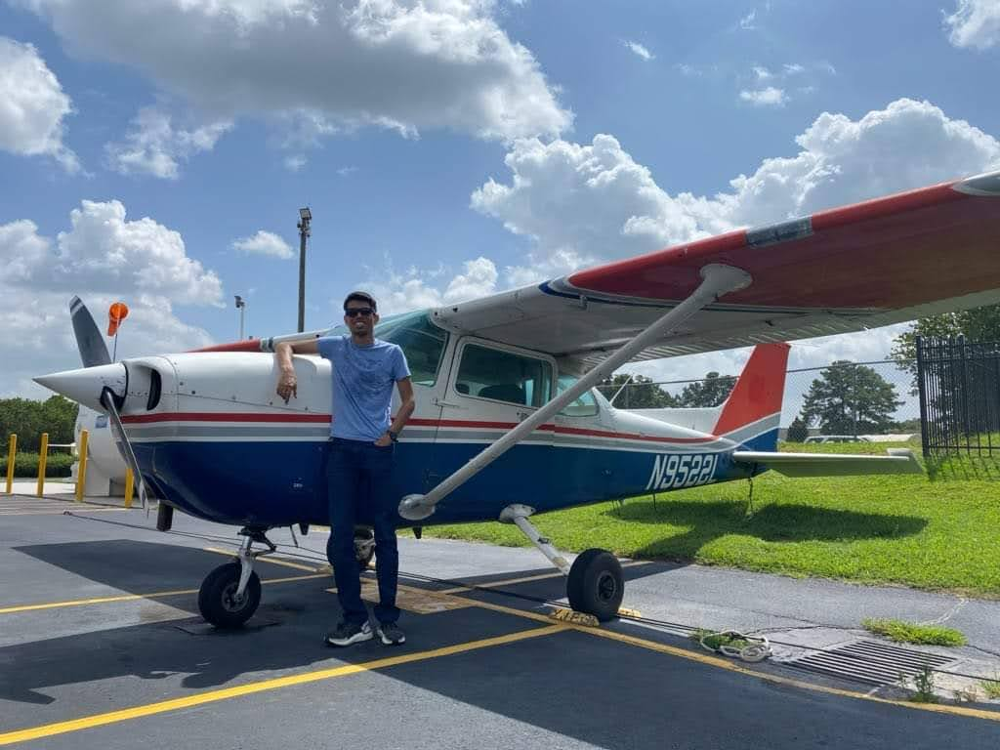
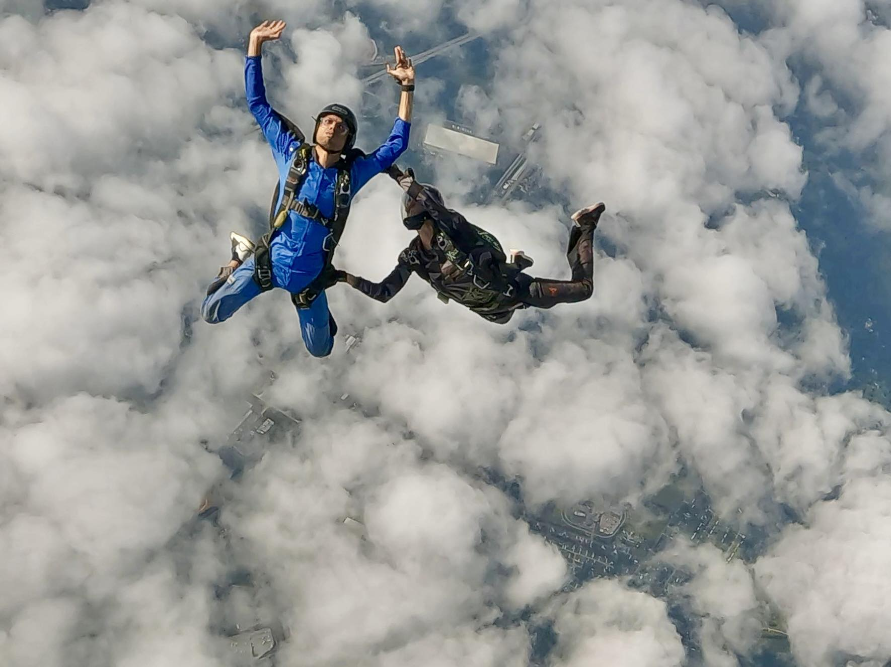

Venkata Ramana Makkapati
|  | Advanced Research Engineer |
Current Research Interests
Optimal control and differential games
Pursuit-evasion games
Learning techniques for decision and control
Aviation and Robotics applications
Publications
A full list of my technical publications can be found on Google scholar. Here are some publications worth highlighting.
Dependent Reachable Sets for the Constant Bearing Pursuit Strategy [arXiv]
V. R. Makkapati, T. R. Vechalapu, V. Comandur, and S. Hutchinson
Under ReviewDesensitization and Deception in Differential Games with Asymmetric Information [arXiv]
V. Comandur, T. R. Vechalapu, V. R. Makkapati, P. Tsiotras, and S. Hutchinson
Dynamic Games and Applications (DGAA), 2024Safe Optimal Control under Parametric Uncertainties [arXiv]
V. R. Makkapati, H. Sarabu, V. Comandur, P. Tsiotras, and S. Hutchinson
IEEE Robotics and Automation Letters (RA-L), 2020A Game-Theoretic Model for One-on-One Air Combat
V. Ramteke, V. Comandur, V. R. Makkapati, and M. Kothari
IFAC International Symposium on Automatic Control in Aerospace (ACA), 2022Optimal Evading Strategies and Task Allocation in Multi-Player Pursuit-Evasion Problems
V. R. Makkapati and P. Tsiotras
Dynamic Games and Applications (DGAA), 2019Pursuit Strategy to Capture High-Speed Evaders using Multiple Pursuers
M. V. Ramana and M. Kothari
Journal of Guidance, Control, and Dynamics (JGCD), 2016
Other Interests
Hiking
During my time in the US, I started exploring the national parks (thanks to Ashwin for the initiation). Here is the map with some photos from my adventures, and a token photo from my most favorite national park, Death valley!
|  |
Flying & Diving
I enjoy flying, and currently hold the FAA Private Pilot license. This is after my first solo flight on a Cessna 172P at the Peachtree-DeKalb airport (PDK).
|  |
After realizing that flying is a costly hobby, I started jumping out of airplanes. I currently hold the USPA A license. Later, I took interest in scuba diving and finished the PADI Advanced Open Water Diver requirements.
|  |
Sporting
At Georgia Tech, I was a part of the GT marksmanship club which introduced me to the world of guns and shooting. Currently, I am a member of the sporting club at Honda Aircraft Company. Here is me during my first skeet shooting session and the photo is after one of our trap shooting sessions.
 |